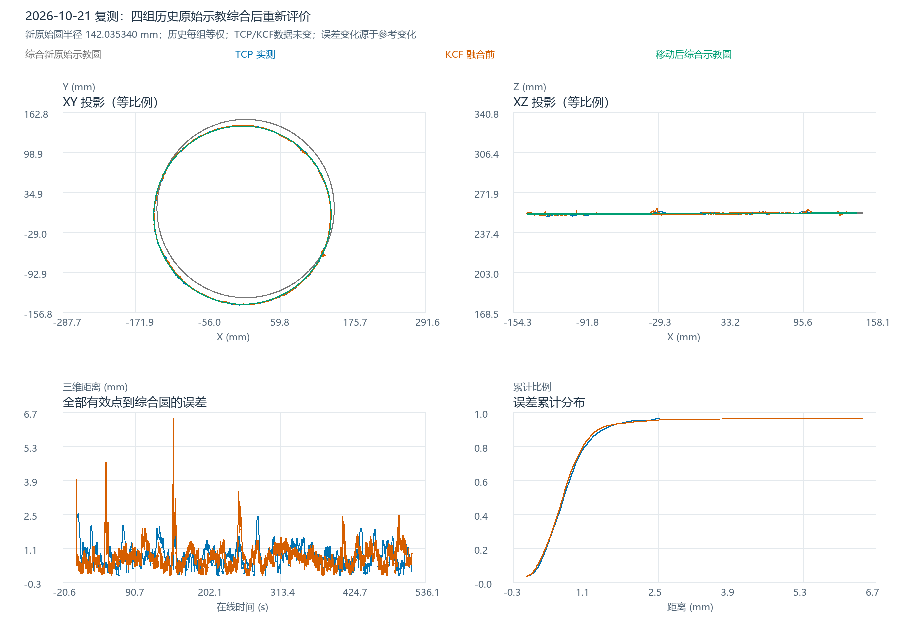

复测会话 20261021_152328_050。四轨迹交互三维图 · 本次数值表 · 完整结果
已只读检索用户指定的8个SontechWorks备份根目录，找到210个出风口相关W/T条目、25种不同W几何（包括反面与早期数据）。筛选有正20mm映射依据的4种原始示教几何，去重后每组等权，形成新原始示教圆：R=142.035340 mm。随后用同一轮TCP、KCF数据重新计算点到移动后综合圆的最短三维距离。
当前Qt工程配置 config/workpieces/workpiece_selection.txt:19 和本轮现场日志均对应：反向扫描 20260914CFKONTEST0，GlobalCorrection 20260914CFKONTEST，IBVSStart 20260405CHUFENGKOULIUCHENGTEST；轨迹基名是 20260404CHUFENGKOU1。它们是不同用途的名字，不能把控制柜程序名当成W/T文件基名。最新SontechWorks分支的正面入口映射到 20260308CHUFENGKOU_W/T.txt，SontechWorks_IBVS映射到 20250606CHUFENGKOU_W/T.txt，Weld_Merge映射到当前 20260404CHUFENGKOU1_W/T.txt；2023历史代码也有 20230608CHUFENGKOU 的正面工件语义证据。
本轮按用户最新范围，仅收集原始示教结果W/T，不将JBR脉冲点纳入几何。完整文件清单 · 各分支源码映射摘录 · 逐组纳入/排除理由。检索中1份反面FLIP文件解析失败，已记录并排除，不影响4组主数据。
| 原始示教组 | W点数 | T点数 | 拟合半径/mm | 备份W条目数 | T点到本组W最近点最大距离/mm |
|---|---|---|---|---|---|
| 20230608CHUFENGKOU | 1687 | 2 | 140.6477 | 6 | 0.0000 |
| 20250606CHUFENGKOU | 1663 | 5 | 141.6920 | 3 | 0.0000 |
| 20260308CHUFENGKOU | 1355 | 2 | 142.0846 | 3 | 0.0000 |
| 20260404CHUFENGKOU1 | 1368 | 5 | 143.7170 | 4 | 0.0000 |
同名或异名但XYZ完全相同的文件只计一组；20260404CHUFENGKOU 与 20260404CHUFENGKOU1 的W几何相同，不重复加权。T是稀疏示教模板，部分T点已被W覆盖，且有些T只有段首/段末两个点，不能作为另一份完整圆观测重复计数。本次T用于配对、来源核查和保留当前姿态模板；每组的圆几何由其完整W轨迹确定。实际采用的8份W/T已逐字节复制在 sources/ 子目录。
反面FLIP/FAN、2021年不完整圆弧、以及没有明确正20mm映射的TRUEVALUE/其它日期候选，不进入主综合。特别是 20260309CHUFENGKOU、20260328CHUFENGKOUTRUEVALUE、20260405CHUFENGKOUTRUEVALUE 虽找到完整文件，但没有把“名字相似”直接升级为当前工件映射证据。它们仍完整列在清单中，未删除。
每组沿用上一轮2°角度分箱代表点的三维圆拟合方法。先对各组做圆心/法线刚体归一，放到当前原始示教的材料坐标系，消除各次摆放位置差异；不缩放。综合半径采用四组拟合半径的算术平均，每组权重1/4。它等价于最小化四个半径的等权平方差；不按备份数量或采样点数加权，也不依据本轮TCP/KCF误差挑半径。四组半径范围为 140.648～143.717 mm，因此这是历史综合参考，不宣称所有记录来自同一件实物或同一次标定。
新原始圆中心/法线保留当前原始示教的参考摆放。新W/T将当前模板XYZ投到综合圆上，分别保留1368点和5点；原来的姿态、外轴和时间列保留为分析元信息，未重新标定或验证为机器人可执行程序。文件专门另存于本分析目录，未替换生产W/T、未改工件配置、未发送运动命令。新原始示教_W · 新原始示教_T · 新原始圆参数 · 四组归一后的原始点。
移动到本轮工件位置仍使用原始KCF圆心/法线估计，保留综合半径 142.035340 mm，不把半径改为KCF的 142.022524 mm。移动矩阵 · 移动后圆参数。圆周几何不依赖绕自身法线的相位角。
| 轨迹 | 点数 | 平均/mm | 最大/mm | RMSE/mm | P95/mm | ≤3mm比例 | 最大值时间 |
|---|---|---|---|---|---|---|---|
| TCP | 5848 | 0.7838 | 2.5685 | 0.8950 | 1.5985 | 100.00% | 15:24:15.253 |
| raw_KCF | 7522 | 0.7677 | 6.4706 | 0.9006 | 1.5064 | 99.67% | 15:26:41.282 |
| final_vision | 7522 | 0.7665 | 6.3021 | 0.8959 | 1.5141 | 99.69% | 15:26:41.282 |
e=sqrt((ρ−R)²+h²)，ρ为点在圆平面投影到圆心的半径，h为到圆平面的有符号高度。按空间连续圆解析计算，不使用绘图圆的离散折线。沿用同一坐标系、同一筛选与同一批有效点，没有对TCP/KCF拟合、平滑或删点。均值为样本加权，不评价沿缝时序或姿态角。
| 轨迹 | 参考 | 平均/mm | 最大/mm | RMSE/mm |
|---|---|---|---|---|
| TCP | previous_single_teach_circle | 1.7262 | 4.1316 | 1.8767 |
| TCP | four_teachings_equal_weight_circle | 0.7838 | 2.5685 | 0.8950 |
| raw_KCF | previous_single_teach_circle | 1.8018 | 4.9609 | 1.9495 |
| raw_KCF | four_teachings_equal_weight_circle | 0.7677 | 6.4706 | 0.9006 |
| final_vision | previous_single_teach_circle | 1.8167 | 4.9609 | 1.9638 |
| final_vision | four_teachings_equal_weight_circle | 0.7665 | 6.3021 | 0.8959 |
这是参考几何变化，不是纠偏算法性能再次提升。TCP、KCF原始测量完全未变；上一版只使用当前单组示教半径 143.717045 mm，本次使用4组综合半径 142.035340 mm。报告误差随参考定义改变，应同时保留来源与对照。结合用户认可的约2～3 mm可接受量级，可按新表评价整体与局部峰值，不能把历史综合圆称为本件实物的独立真值。
另做“每次删去一组历史示教”的参考敏感性分析，见敏感性表。主结果固定采用四组等权，不从敏感性表挑最小误差。

已核对4组XYZ哈希互异、各复制文件与源文件SHA-256相等、变换正交、生成W/T点位在新圆上、元信息列保持不变、全部误差与圆周垂足距离一致。所有输入哈希见清单。复现先运行 inventory.py，再运行 synthesize.py。数值结果和来源状态见验证记录。未修改外部备份、当前生产源码/配置/原始数据，未删除文件、使用鼠标或发送设备指令；真实浏览器交互未验收。